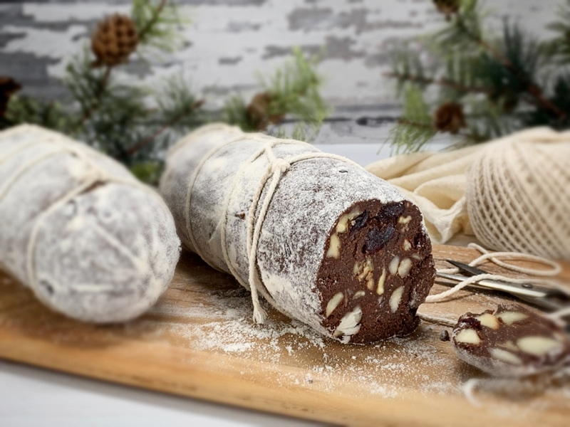
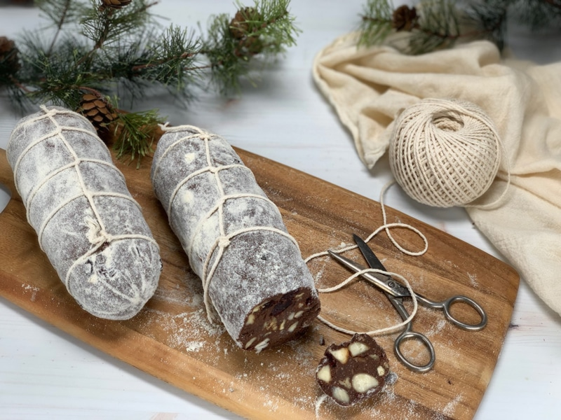
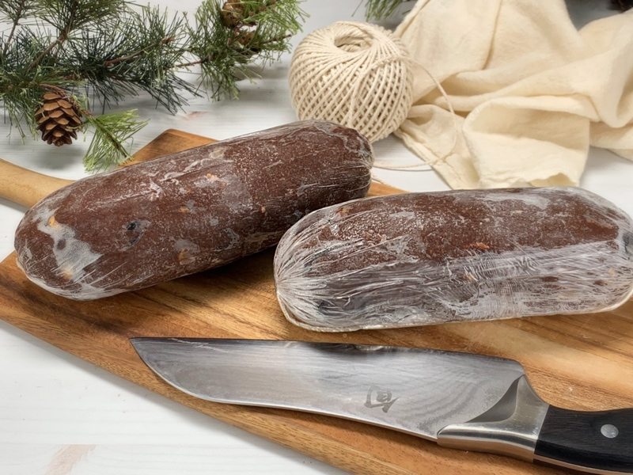
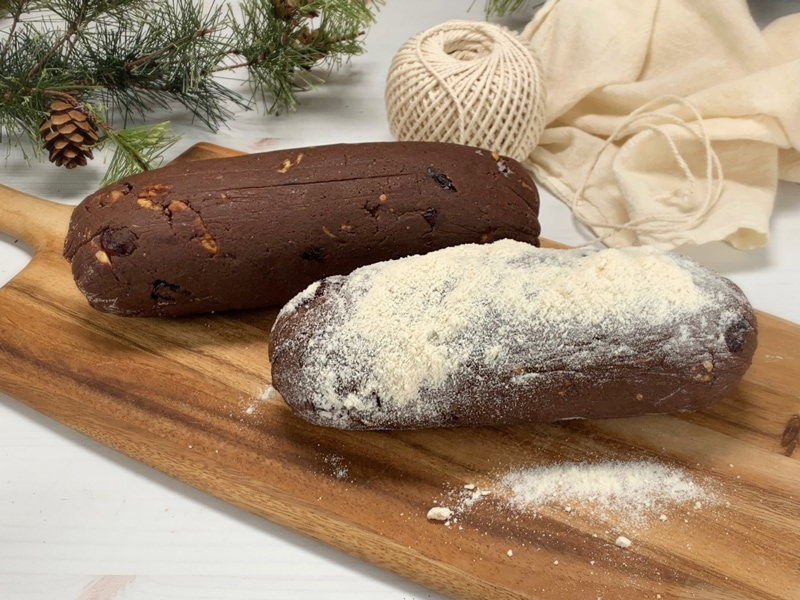
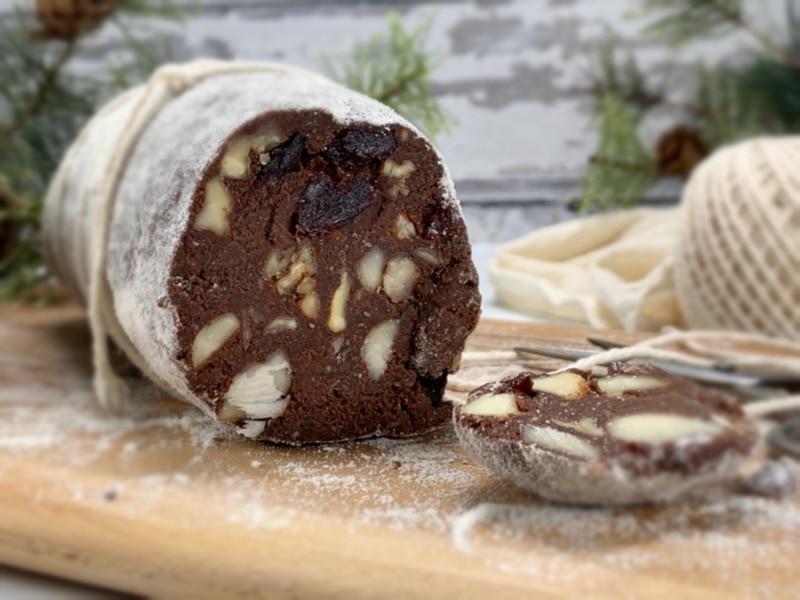

Chocolate Salami Log
So the title and photos may seem a bit of a head-scratcher. Let me clear one thing up in case you are confused; chocolate salami doesn’t contain any meat! The salami name derives from the physical appearance, which is cylindrical and can be sliced for serving. In my chocolate version, chopped nuts resemble the speckled fat of a real salami. This recipe is easy to make, doesn’t require any cooking or dehydrating. Therefore, it makes for a great gift and a delicious chocolate treat.

Today, I decided to take a virtual trip to briefly explore the origins and traditions surrounding this classic Italian and Portuguese dessert. In Italy, Salame de Chocolate is a traditional Italian Food. In Bologna, the chocolate salami is a traditional sweet treat for Passover. In Portugal, Chocolate Salami is a popular dessert combining cocoa, broken biscuits, butter, eggs, and a bit of port wine or rum. Of course, we won’t be using any of those ingredients.

What to Expect
I admit, this chocolate salami does have a certain charm, especially when dusted with coconut flour and tied up like a proper salami with bakers string. I have never tied traditional salami, so I have to confess that I just winged it. If you wish to do it properly, Google the technique. I attempted to take step by step photos, but when trying to juggle the salami, the string, and the camera… it turned into a mess. A finger-licking mess, but a mess none-the-less. hehe
This sweet treat is only slightly sweet and has a deep rich chocolate bite. I welcome you to taste test the process and adjust the sweetness to your liking. The key is to make sure that you work the ingredients together well so that it creates a smooth cutting slice. Enjoy the process and the outcome. blessings, amie sue
 Ingredients
Ingredients
yields 2 logs
- 1 cup coconut flour
- 1 cup fine almond flour
- 3/4 cup raw cacao powder
- 1/2 cup chia seeds, powdered
- 1/4 tsp pink Himalayan salt
- 1 cup hazelnuts, rough chop
- 1/2 cup pecans, rough chop
- 1/4 cup walnuts, rough chop
- 1/4 cup dried cranberries
- 1 Tbsp freshly grated orange zest
- 1 1/4 cup water
- 1/2 cup raw honey or coconut nectar
- 1/4 cup maple syrup
- 1 tsp almond extract
Decoration
- Coconut flour for the coating
- Butcher’s string to wrap it in
Preparation
- In a large bowl, combine the coconut flour, almond flour, cacao powder, powdered chia seeds, and salt. Toss all of them together.
- Use a fine almond flour to achieve the best texture and look. You can use store-bought (not raw) or make your own with almond pulp. Click on the link provided above.
- Add the macadamia nuts, pecans, walnuts, zest, and cranberries. Toss again.
- Feel free to use any nut combo that you like or have on hand.
- Do not use just soaked nuts; make sure they are already soaked and dehydrated.
- Chop them into medium pieces but avoid adding all the tiny pieces, so it doesn’t “dirty” up the chocolate portion of the dough with those bits and pieces.
- Add the water, sweetener, and almond extract. It is best to combine all of these ingredients with your hands.
- To make this vegan, use a thick sweetener such as Coconut Nectar.
- Once well combined, divide the dough into two sections. Shape into a log.
- Cover the chocolate log completely with the plastic wrap (cling film) and then firmly roll it, as if it were a rolling pin, to create a smooth, rounded cylinder.
- Twist the ends by grasping both ends of the clingfilm and rolling the sausage-log towards you several times.
- The plastic wrap creates ridges on the outside of the chocolate, which mimics the ridges on the outside of salami when it’s peeled.
- Place in the fridge for at least 6 hours (though preferably overnight) to set.
- When set, remove the plastic wrap and roll the log in coconut flour.
- They are typically rolled in icing or powdered sugar.
- For a salami effect, tie butcher’s string around the log, slice into rounds and serve.
- Store in the fridge or freezer for a month.



© AmieSue.com